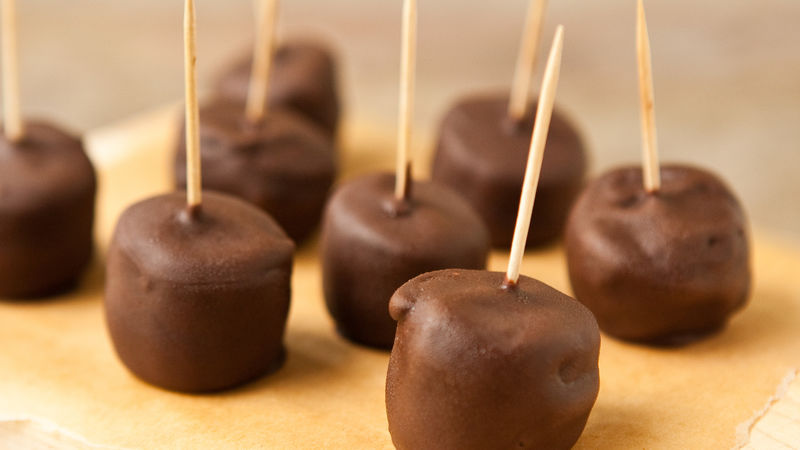

Chocolate Coated Banana Slices

Description
This is a recipe I kinda stumbled upon with my brother.
We were eating frozen grapes, and then I had the sudden idea of melting
some chocolate chips and then coating the grapes.
Then we tried the same with banana slices!
Ingredients
- 2 ripe bananas
- semi-sweet chocolate chips
- toothpicks
Steps
- peel bananas, cut into half an inch to one inch slices, freeze overnight
- when you want to eat, take half a cup of chocolate chips
and toss them in the microwave, watch them so they don't burn.
- once melted, take a toothpick and skewer a banana slices, then roll it in
the melted chocolate, wait a few seconds so the coat hardens, then enjoy!